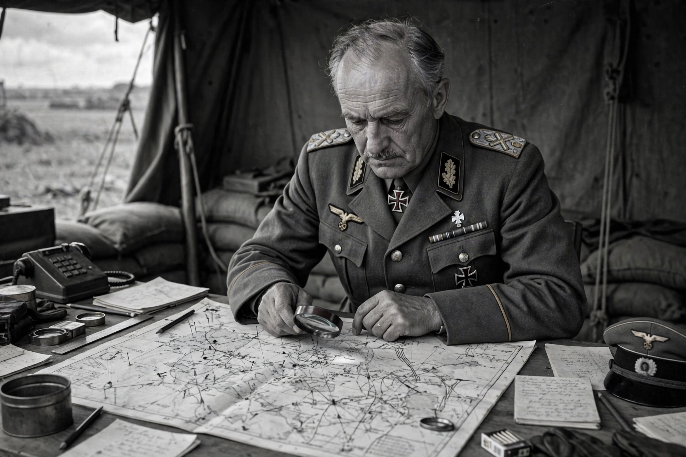

Erich von Manstein
| Erich von Manstein | |
|---|---|
 | |
| Born | Fritz Erich Georg Eduard von Lewinski; 24 November 1887, Berlin, German Empire |
| Died | 9 June 1973 (aged 85), Irschenhausen, West Germany |
| Allegiance | German Empire; Weimar Republic; Nazi Germany |
| Service | Imperial German Army; Reichswehr; Wehrmacht (Heer), 1906–1944 |
| Rank | Generalfeldmarschall (Field Marshal) |
| Commands | 11th Army; Army Group Don; Army Group South |
Fritz Erich Georg Eduard von Manstein (born von Lewinski; 24 November 1887 – 9 June 1973) was a German military officer who served as a field marshal in the Wehrmacht during the Second World War. Widely regarded as one of the most talented operational commanders of the war, he conceived the audacious armoured thrust through the Ardennes that defeated France in 1940, conquered Crimea and Sevastopol in 1942, and directed the mobile defence and counterstroke at Kharkov in 1943. He was also complicit in war crimes on the Eastern Front, and was convicted by a British military court in 1949.
Early career
Born into a Prussian military family and adopted by the childless von Manstein family, he was commissioned in 1906, served as a staff officer in the First World War, and remained in the Reichswehr between the wars. By 1939 he was chief of staff of Army Group South for the invasion of Poland.
Second World War
As chief of staff to Gerd von Rundstedt's Army Group A, Manstein drafted the plan — the Sichelschnitt ("sickle cut") — that sent the panzers through the Ardennes and to the Channel, producing the encirclement relieved only by the Dunkirk evacuation and the collapse of France. In 1941–42, commanding the 11th Army in Operation Barbarossa, he captured Crimea and stormed the fortress of Sevastopol after a long siege, earning his field marshal's baton. In that theatre his army cooperated with Einsatzgruppe D in the murder of Jews and others, and his order of November 1941 echoed Nazi propaganda about "Jewish-Bolshevism" — evidence later central to his trial.
After the German Sixth Army was encircled at Stalingrad, Manstein took command of Army Group Don and attempted a relief offensive (Operation Winter Storm) in December 1942, which failed; the Sixth Army surrendered in February 1943. His finest achievement followed: abandoning Kharkov, he lured the overextended Soviet spearheads onward and destroyed them in the "backhand blow" of the Third Battle of Kharkov (February–March 1943), stabilising the front. He planned the German offensive at Kursk in July 1943 and thereafter conducted a fighting retreat across Ukraine against Hitler's repeated stand-fast orders. After months of friction, Hitler dismissed him on 30 March 1944.
Trial, memoirs and legacy
Tried by a British military court at Hamburg in 1949 on seventeen charges, Manstein was convicted on nine — including failing to protect civilian life and using scorched-earth tactics — and sentenced to eighteen years, reduced to twelve; he was released in 1953 on health grounds. His bestselling memoir Verlorene Siege (Lost Victories, 1955) presented him as a professional soldier frustrated by Hitler's meddling and helped shape the post-war myth of the "clean Wehrmacht" — a picture historians have substantially revised by documenting his knowledge of and cooperation with the regime's crimes. He later advised the West German government on the creation of the Bundeswehr.